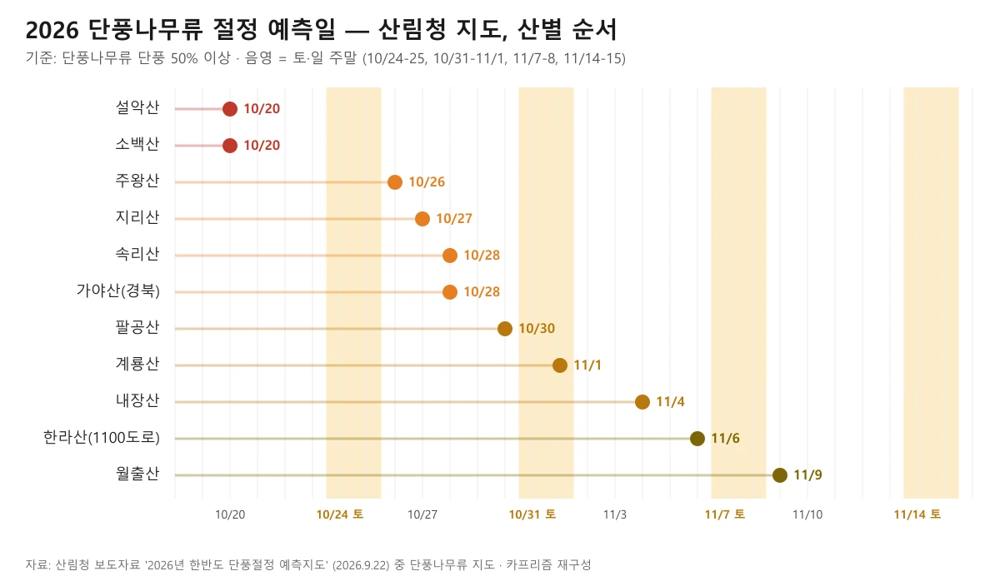
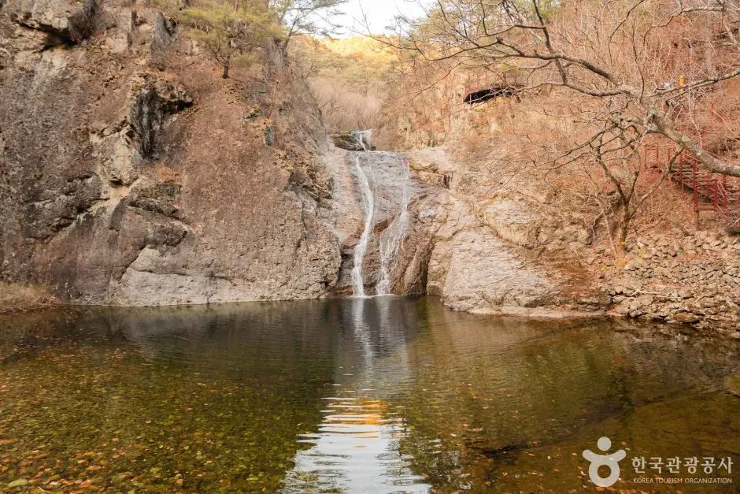
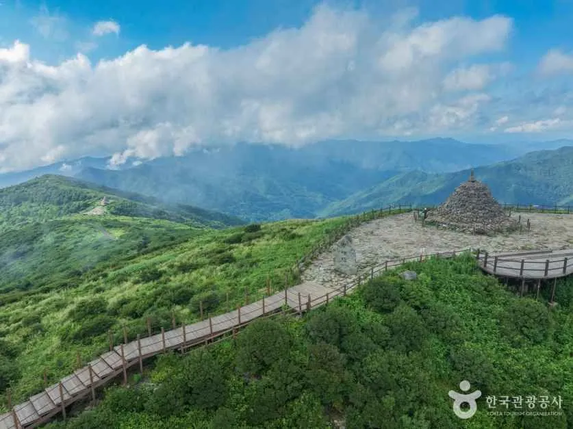
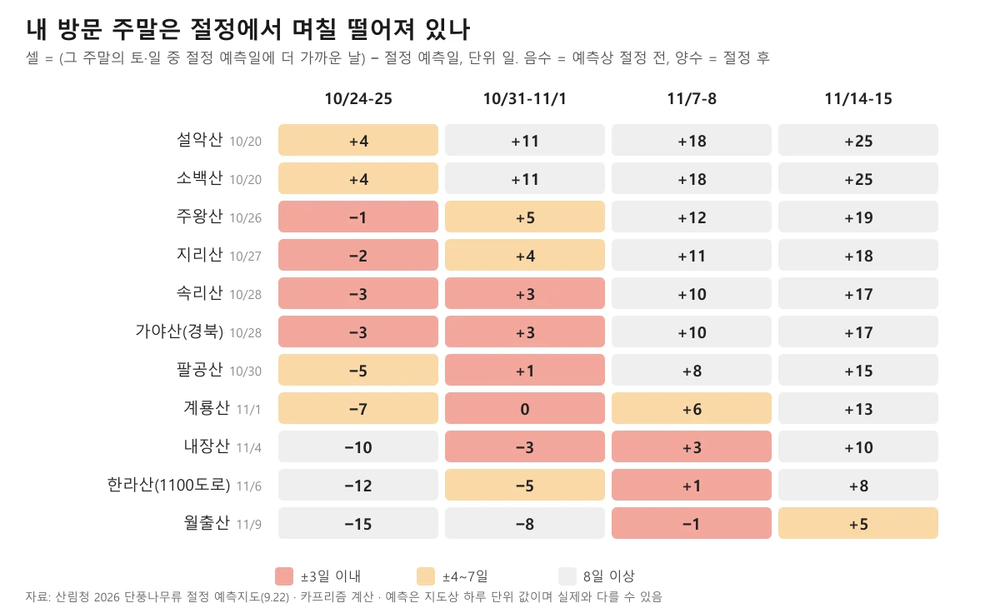
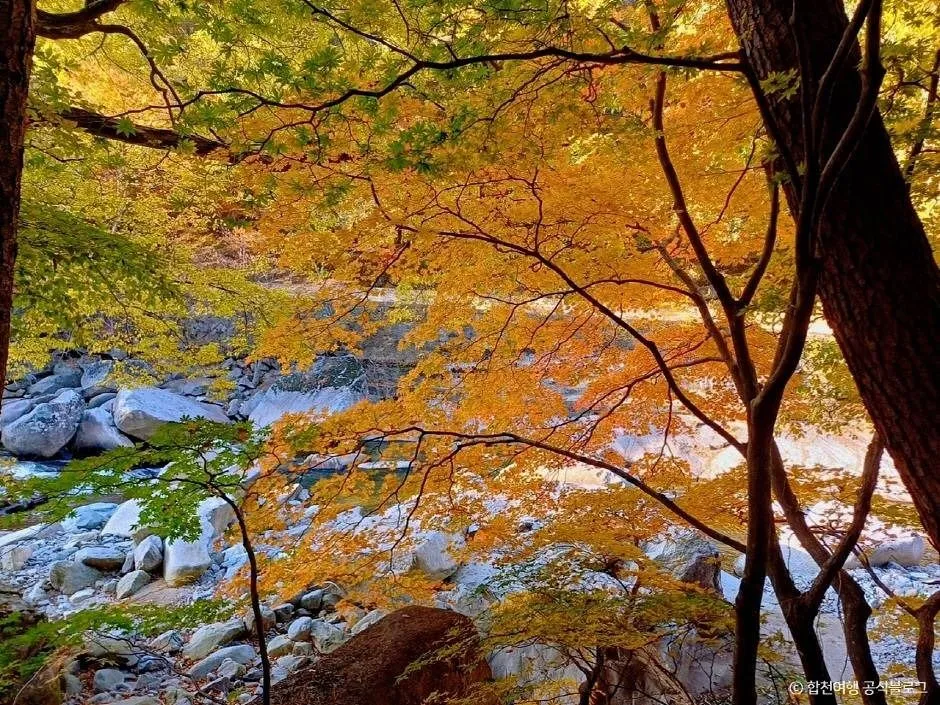
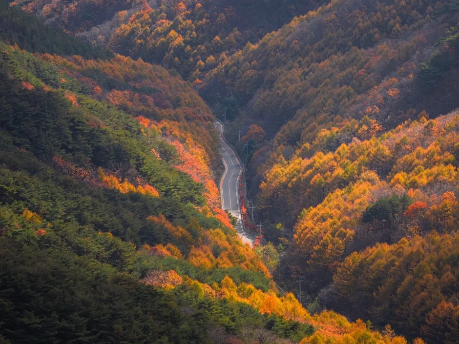
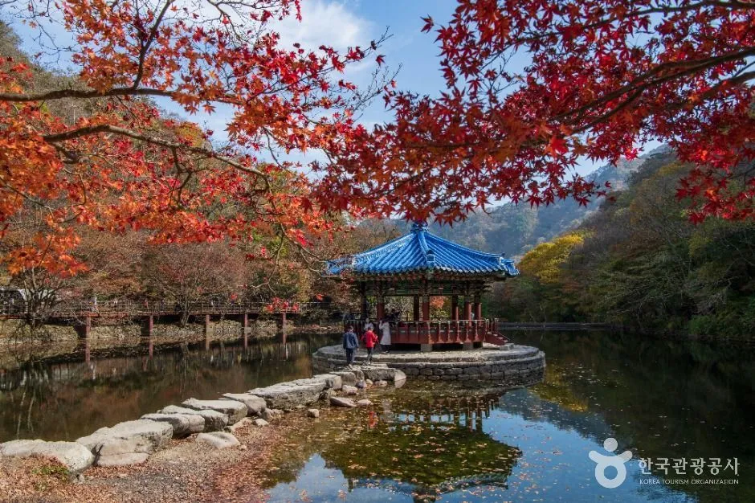
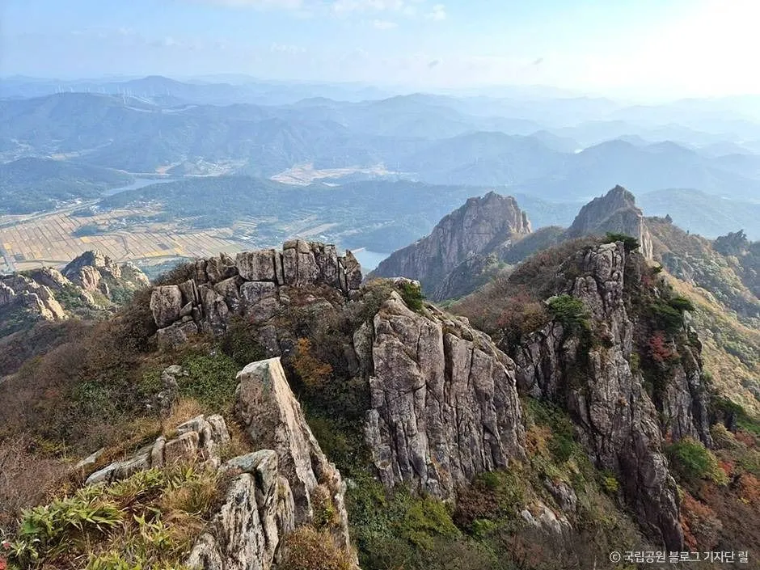

▲ 설악산국립공원의 계곡. 정확한 장소와 촬영 시기는 원본 설명에 없다. 사진=한국관광공사
"설악산은 10월 24일이면 이미 4일 지났다고?" 산림청이 9월 22일 내놓은 '2026년 한반도 단풍절정 예측지도'의 날짜를 주말 달력에 얹으면 그렇게 된다. 설악산 단풍나무류 절정 예측일은 10월 20일(화)이고, 첫 번째로 잡은 주말(10월 24~25일)은 그보다 4일 뒤다. 반대로 같은 주말에 주왕산(10월 26일)·지리산(27일)·속리산(28일)·가야산 경북 쪽(28일)은 절정까지 1~3일이 남아 있다. 이 글은 2026년 10월 8일에 산림청 보도자료 원문과 지도 이미지를 직접 열어 확인한 산별 예측일을 주말 4개(10월 24~25일, 10월 31일~11월 1일, 11월 7~8일, 11월 14~15일)와 맞대고, 자차로 가는 독자가 어느 산을 어느 주말에 고를지 정리했다. 산 10곳 가운데 예측 절정일과 ±3일 안에 드는 곳은 10월 24~25일에 4곳, 10월 31일~11월 1일에 5곳, 11월 7~8일에 2곳, 11월 14~15일에는 0곳이다.
💡 먼저 결론
예측 절정일에 가장 많은 산이 걸리는 주말은 10월 31일~11월 1일(속리산·가야산 경북·팔공산·계룡산·내장산 5곳이 ±3일 이내)이다. 설악산·소백산은 10월 20일이 절정이라 지정한 주말보다 10월 17~18일(절정 2~3일 전)이 더 가깝고, 월출산은 11월 7~8일(11월 9일 예측)이다. 산림청 지도는 단풍나무류 잎이 50% 이상 물든 날을 하루 단위로 찍은 값이라, 오차 범위는 보도자료에서 확인하지 못했다.
1. 이 글의 기준 — 산림청이 9월 22일에 낸 지도에서 읽은 값
산림청은 2026년 9월 22일 보도자료 '붉은 단풍, 노란 은행… 한반도 가을은 언제 절정일까?'(부제: 2026년 한반도 단풍절정 예측지도 발표)를 냈다. 산림환경보호과 담당이고, 첨부파일로 단풍나무류·참나무류·은행나무 지도 이미지 3장이 붙어 있다. 이 글의 산별 날짜는 이 가운데 '단풍나무류 단풍절정 예측지도' 이미지에 적힌 값이다. 지도 상단에 "기준: 단풍나무류 단풍 50% 이상"이 적혀 있다.
| 항목 | 내용 |
|---|---|
| 올해 첫 단풍 | 9월 14일 점봉산 산림유전자원보호구역에서 시민 관측으로 처음 기록 |
| 전국 흐름 | 10월 초 강원 북부 산지에서 물들기 시작해 10월 하순 전국 절정(단풍 50%). 설악산에서 중부·남부로 확산 |
| 수종별 절정 예측일 | 은행나무 10월 30일, 단풍나무류 10월 31일, 참나무류 10월 31일 |
| 최근 5년 비교 | 최근 5년간 절정 시기와 비교해 약 0.8일 늦어짐 |
| 본문에 적힌 산지 | 설악산 10월 20일, 속리산 10월 28일, 내장산 11월 4일, 한라산 11월 6일(4곳) |
| 예측 자료 | 산림청·국립수목원이 2009년부터 권역별 공립수목원과 쌓은 식물계절 장기 관측자료, 국립산림과학원 산악기상망 기상정보. 앞으로 농림위성 광역 산림관측을 연계할 계획 |
본문 표에는 4곳만 있지만 지도 이미지에는 훨씬 많은 산과 수목원이 찍혀 있다. 아래 표의 소백산·주왕산·지리산·가야산·팔공산·계룡산·월출산 날짜는 본문이 아니라 지도 이미지에서 읽은 값이다. 지도에서 가장 이른 값은 설악산·소백산·화악산의 10월 20일이다. 가야산은 '가야산(경북)'과 '가야산(충남)'이 따로 표기돼 있다. 이 글은 '가야산(경북)' 값만 골랐고, 합천 해인사 코스와 같은 지점인지는 지도에서 확인되지 않아 카프리즘이 같은 가야산 일대 값으로 본 것이다.

▲ 산림청 단풍나무류 지도의 절정 예측일(설악산 10월 20일~월출산 11월 9일)과 주말 4개를 겹쳐 그렸다. 카프리즘 제작 도표.
2. 절정 예측일 순서 — 산 10곳, 가장 가까운 주말은 언제
아래 표는 산림청 단풍나무류 지도의 예측일 순서다. '가장 가까운 주말'은 토·일 중 예측일에 더 가까운 날과의 차이를 일 단위로 적었다. 양수는 그 날이 예측 절정일보다 뒤(절정 후), 음수는 앞(절정 전)이다. 속리산·가야산·내장산은 앞뒤 주말이 똑같이 3일씩 떨어져 있어 두 주말을 모두 적었다.
| 산 | 예측 절정일 | 가장 가까운 주말(차이) |
|---|---|---|
| 설악산(강원) | 10월 20일(화) | 10월 24~25일(+4일). 지정 주말 밖 10월 17~18일은 −2일 |
| 소백산(경북·충북) | 10월 20일(화) | 10월 24~25일(+4일). 10월 17~18일은 −2일 |
| 주왕산(경북 청송) | 10월 26일(월) | 10월 24~25일(−1일) |
| 지리산(전북·전남·경남) | 10월 27일(화) | 10월 24~25일(−2일) |
| 속리산(충북) | 10월 28일(수) | 10월 24~25일(−3일) 또는 10월 31일~11월 1일(+3일) |
| 가야산(경북 표기) | 10월 28일(수) | 10월 24~25일(−3일) 또는 10월 31일~11월 1일(+3일) |
| 팔공산(대구·경북) | 10월 30일(금) | 10월 31일~11월 1일(+1일) |
| 계룡산(충남) | 11월 1일(일) | 10월 31일~11월 1일(0일, 일요일이 예측일) |
| 내장산(전북 정읍) | 11월 4일(수) | 10월 31일~11월 1일(−3일) 또는 11월 7~8일(+3일) |
| 월출산(전남 영암) | 11월 9일(월) | 11월 7~8일(−1일) |
지도에는 한라산(1100도로) 11월 6일도 있다. 제주는 육지 산과 같은 주말·자차 비교가 어려워 표에서 뺐다. 산 지점 가운데 남쪽에서 늦은 값은 월출산 11월 9일, 두륜산·상왕봉 11월 11일이다(수목원·식물원 지점은 한라수목원 11월 19일이 가장 늦다). 이 글에서는 두륜산·상왕봉은 다루지 않았다.
▲ 설악산국립공원의 계곡. 노랗게 물든 잎 사이로 물이 흐르는 장면이다. 정확한 장소와 촬영 시기는 원본 설명에 없다. 사진=한국관광공사
3. 자차로 가는 법 — 산마다 먼저 확인할 것
2026년 단풍철 주차·셔틀 공식 공지는 이 글을 쓴 10월 8일 기준으로 설악산 속초시 교통대책(언론 보도)을 빼고는 찾지 못했다. 그래서 이 표는 카프리즘이 이미 쓴 산별 기사에서 확인한 내용을 옮기고 해당 기사로 이어지게 했다. 요금과 통제 일정은 해마다 바뀌므로 출발 전 국립공원공단과 지자체 공지를 다시 확인해야 한다.
| 산 | 자차 핵심 | 상세 |
|---|---|---|
| 설악산 | 단풍철 주말 소공원 주차장은 오전 이른 시간 만차가 되고, 만차 시 경찰·모범운전자 수신호로 진입이 통제된다. 대안은 설악동 BC지구 주차장 + 무료 셔틀. 소공원 주차료 승용차 6,000원(기사 기준). 케이블카는 당일 현장 구매만 가능. 2026년에는 속초시가 10월 3일~11월 8일 주말·공휴일 중심 특별교통대책으로 소공원 진입도로를 교통량에 따라 단계적으로 통제하고 B·C지구 무료주차장으로 분산하며 무료 셔틀을 제공한다고 한다(10월 2일 언론 보도, 셔틀 구간·배차 간격은 보도에 없음) | 설악산 소공원 주차·셔틀 기사 |
| 소백산 | 희방탐방지원센터에서 희방폭포·희방사를 지나 연화봉으로 오르는 경북 영주 코스. 입장료·주차는 해당 기사에 정리 | 소백산 희방 코스 기사 |
| 주왕산 | 국립공원 입장료는 2007년 폐지, 대전사 문화재관람료도 2023년 5월 폐지돼 내는 돈은 주차료 등. 청송IC·영덕IC에서 국도로 접근 | 주왕산 주산지·주차 기사 |
| 지리산 | 노고단 정상 탐방은 예약 필요·탐방료 무료. 성삼재 주차장은 중소형차 첫 1시간 1,100원, 이후 10분당 300원이라 6시간이면 1만 원을 넘는다(기사 기준) | 성삼재 주차·노고단 예약 기사, 남원 뱀사골·정령치 기사 |
| 속리산 | 법주사 입장·국립공원 입장 무료, 법주사 앞 주차는 1일 5,000원 안팎으로 알려졌다(공단 요금 안내는 미확인). 주말은 일찍 도착 | 보은대추축제·속리산 기사 |
| 가야산(합천) | 해인사 방면 홍류동 계곡 소리길 약 9km 코스. 입장료·주차는 해당 기사에 정리 | 해인사·가야산 기사 |
| 팔공산 | 갓바위 시설지구 주차(2017년 기준 약 542대)가 단풍철 주말에 부족할 수 있다. 갓바위 오르기는 대구 쪽 약 1시간, 경산 쪽 약 30분 | 팔공산 갓바위 기사 |
| 계룡산 | 갑사·동학사 두 사찰이 대표 코스. 탐방로예약제 대상 구간이 있다 | 계룡산 갑사·동학사 기사 |
| 내장산 | 단풍 절정기에 내장호주차장~월령교 2.1km 구간 차량 진입이 통제되고 무료 셔틀을 탄다(통제 기간만 운행). 주차료는 당일 정액으로 중·소형 주중 4,000원·주말 5,000원(기사 기준). 2026년 통제 일정은 기사 작성 당시 미발표였고 이번에도 공식 공지는 찾지 못했다. 국립공원공단 내장산 안내 페이지에는 2026년 9월 7일자 '탐방 예약제 운영 공고'가 올라와 있으나 본문은 확인하지 못했다 | 내장산 차량 통제·셔틀 기사 |
| 월출산 | 해발 510m 구름다리와 천황봉 코스. 교통·주차·입장료는 해당 기사에 정리 | 월출산 구름다리 기사 |

▲ 주왕산국립공원의 폭포와 소(沼). 폭포의 정확한 이름과 촬영 시기는 원본 설명에 없다. 사진=한국관광공사

▲ 지리산국립공원(구례) 능선으로 이어지는 나무 데크 탐방로. 푸른 녹음이 짙어 단풍철 모습은 아니다. 사진=한국관광공사
4. 주말별로 고르면 — 4주 중 어느 날에 어느 산
아래 도표는 위 표를 주말 4개 칸으로 펼친 것이다. 붉은 칸(±3일 이내)이 예측상 절정에 가장 가깝다. 4일 이상 이르거나 늦으면 같은 산이라도 색이 덜 들었거나 잎이 지는 쪽일 수 있다. 이는 카프리즘의 해석이고 산림청이 같은 기준을 제시한 것은 아니다.

▲ 방문 주말과 산림청 절정 예측일의 차이(일). 음수는 절정 전, 양수는 절정 후다. 한라산 1100도로는 도표에서 뺐다. 카프리즘 계산·제작 도표.
| 주말 | ±3일 이내 | 그 밖에 가까운 산 |
|---|---|---|
| 10월 17~18일(지정 주말 밖) | 설악산(−2일), 소백산(−2일) | 주왕산(−8일) |
| 10월 24~25일 | 주왕산(−1), 지리산(−2), 속리산(−3), 가야산 경북(−3) | 설악산·소백산(+4), 팔공산(−5) |
| 10월 31일~11월 1일 | 속리산(+3), 가야산 경북(+3), 팔공산(+1), 계룡산(0), 내장산(−3) | 주왕산(+5), 지리산(+4) |
| 11월 7~8일 | 내장산(+3), 월출산(−1) | 계룡산(+6), 한라산 1100도로(+1) |
| 11월 14~15일 | 없음 | 월출산(+5) |
▲ 속리산 법주사 대웅보전과 앞마당. 맑은 날의 사찰 전경으로 단풍철 모습은 아니다. 사진=한국관광공사

▲ 합천 가야산 소리길의 계곡. 노랗게 물든 잎이 계곡 위를 덮고 있다. 촬영 시기는 원본 설명에 없다. 사진=한국관광공사
5. 예측이 어긋날 수 있는 이유 — 보도자료가 말하는 것과 말하지 않는 것
먼저 한계부터 적는다. 산림청 보도자료 본문(산림청 누리집 게시글 기준)에서 오차 범위("±며칠")와 기온·강수 같은 기상 요인이 절정 시기에 미치는 영향에 대한 설명은 확인하지 못했다. 지도에 찍힌 값은 하루 단위 숫자 하나다. 그래서 위 표의 ±3일 구분은 카프리즘이 임의로 나눈 것이고 산림청의 신뢰구간이 아니다. 예측이 어긋날 수 있다는 점은 자료의 성격에서 짐작할 수 있다.
- 기준 수종이 다르다. 이 글의 표는 단풍나무류 지도 기준이다. 보도자료의 전국 수종별 예측일은 은행나무 10월 30일, 단풍나무류·참나무류 10월 31일로 수종마다 다르다. 산이 붉게 보이는 시점은 단풍나무 비율에도 좌우될 수 있다.
- '50%'는 절정의 한 정의다. 산림청·국립수목원 지도는 잎의 50% 이상이 물든 시점을 절정으로 본다. 기상청은 산 전체의 약 20%가 물들면 첫 단풍, 약 80%가 물들면 절정으로 본다는 설명이 언론 보도에 있어(기상청 원문은 이번에 열어보지 못했다) 기관마다 날짜가 다를 수 있다. 같은 주제를 다룬 기존 기사는 산림청 공식 지도 기사와 단풍 남하 속도·고도별 시기 기사다.
- 올해 값은 평균보다 조금 늦다. 산림청은 최근 5년 절정 시기와 비교해 약 0.8일 늦어진다고 밝혔다. 하루가 채 안 되는 차이라 일정 판단을 바꿀 정도는 아니다.
- 지도는 큰 흐름용이다. 국립수목원 9월 29일 보도자료에 따르면 개별 장소의 예상 절정일은 국가생물종지식정보시스템 식물계절관측 서비스(knpn.nature.go.kr)의 '관측기록 > 계절예측' 메뉴에서 도로명주소·건물 이름으로 검색할 수 있다. 보도자료는 2025년 '단풍연가' 프로젝트에 참여한 시민 829명의 관측자료가 서비스 개발의 기초자료로 쓰였다고 밝혔다.
한국관광공사도 10월 8일 국립수목원과 함께 '2026 단풍지도'를 대한민국 구석구석 누리집에 공개했다고 언론이 보도했다. 전국 36곳을 6개 권역으로 나눠 수도권·강원권은 10월 말부터, 경상권·전라권은 11월 초·중순부터 단풍을 볼 수 있다고 소개했다는 내용이다. 이 글은 그 지도의 원본은 열어보지 못했고 보도 내용만 확인했다. 산림청 지도와 같은 값이 아니므로 섞어 쓰지 않았다.

▲ 팔공산국립공원(갓바위지구)의 산자락. 주황·노란 단풍과 짙은 녹색 숲이 섞여 골짜기를 따라 도로가 지나간다. 촬영 시기는 원본 설명에 없다. 사진=한국관광공사
6. 자차 안전 — 정체, 단속, 낙엽길
주말을 정했다면 다음은 가는 길이다. 단풍철 도로에서 놓치기 쉬운 것 세 가지를 기존 기사로 묶었다.
- 출발 시각. 설악산·내장산·지리산 방면 고속도로는 토요일 오전 8시를 기점으로 정체가 시작된다고 한국도로공사 로드플러스·ITS 국가교통정보센터 자료를 바탕으로 정리한 기사가 있다. 단풍철 고속도로 최적 출발시각 기사.
- 주정차 단속. 단풍철 갓길·국립공원 진입로에서 승용차 과태료는 4만·5만·8만·12만 원 구간이 있고, 양양군 오색지구는 이중 부과 방침 사례가 있다. 갓길·진입로 단속 기사.
- 낙엽 쌓인 산길. 젖은 낙엽 위에서는 타이어와 노면 사이 마찰계수가 0.2 수준까지 떨어지고, 습기가 많은 아침이나 빗길에는 평소보다 20~50% 감속이 권장된다. 가을 산간 도로에서는 낙석 위험도 커진다. 가을 산길 마찰계수 0.2 기사.
11월 늦은 주말에 주왕산·속리산 같은 곳을 노린다면 탐방로 통제도 확인해야 한다. 2025년 기준으로 주왕산은 11월 15일부터 12월 15일까지 6개 구간 28.9km를, 속리산은 13개 구간을 통제했고, 가을철 산불조심기간은 10월 20일부터 12월 15일까지였다. 2026년 통제 일정과 산불조심기간은 해당 기사 작성 당시 공고 전이었고 이번에 확인하지 못했다. 산불조심기간·탐방로 통제 기사, 국립공원 탐방예약제 정원 기사.

▲ 내장산국립공원의 붉은 단풍과 연못가 정자. 촬영 시기는 원본 설명에 없다. 사진=한국관광공사
7. 같은 시기 축제와 묶기 — 날짜가 어긋나는 곳이 많다
축제와 절정 예측일이 겹치는지도 계산해 봤다. 일정은 각 기사에서 확인한 값이고, 아래 간격은 이 글에서 계산한 것이다.
| 산 | 예측 절정일 | 인근 행사(기존 기사 기준) | 간격 |
|---|---|---|---|
| 속리산 | 10월 28일 | 보은대추축제 10월 16~25일(보은읍 뱃들공원·속리산 일원) | 폐막 3일 뒤가 절정. 보은대추축제 기사 |
| 팔공산 | 10월 30일 | 팔공산 단풍축제 10월 30일~11월 1일(2차 자료 기준, 공식 공지 미확인) | 축제 일정이 맞다면 예측일과 겹침. 팔공산 갓바위 기사 |
| 주왕산 | 10월 26일 | 제20회 청송사과축제 11월 4~8일(청송읍 용전천 현비암 일원) | 축제 개막이 예측일 9일 뒤. 청송사과축제 기사 |
| 내장산 | 11월 4일 | 정읍 구절초 꽃축제 10월 8~18일(산내면 구절초 지방정원) | 폐막 17일 뒤가 절정. 정읍 구절초 꽃축제 기사 |
내장산은 앞의 기사 한 편이 2026년 절정을 10월 25일~11월 7일 범위로 적었는데, 그 기사에 공식 출처는 표기돼 있지 않다. 이 글은 산림청 지도의 단일 값인 11월 4일을 기준으로 삼았다. 10월 25일~11월 7일이라는 범위는 이번 산림청 지도에서 확인되지 않는다.

▲ 월출산국립공원의 암봉 능선. 원본 설명에 촬영 시기가 없어 단풍철 모습으로 단정하지 않는다. 사진=한국관광공사
✅ 출발 전 체크리스트
· 산림청 단풍나무류 절정 예측일(기준 50%): 설악·소백 10/20, 주왕 10/26, 지리 10/27, 속리·가야 경북 10/28, 팔공 10/30, 계룡 11/1, 내장 11/4, 한라 1100도로 11/6, 월출 11/9
· 10/31~11/1에 ±3일 이내인 산은 속리·가야 경북·팔공·계룡·내장 5곳, 설악·소백은 10/17~18이 가장 가깝다
· 오차 범위·기상 영향 설명은 보도자료에서 확인하지 못했다. 출발 직전 국립수목원 검색서비스(knpn.nature.go.kr)와 국립공원공단 현황으로 재확인
· 2026년 주차·셔틀·차량 통제 공지는 대부분 미확인. 설악산·내장산은 통제와 만차 가능성을 전제로 이른 도착
· 토요일 고속도로는 오전 8시 이전 출발, 낙엽 쌓인 산길은 20~50% 감속
8. 정리
산림청이 2026년 9월 22일 발표한 단풍나무류 절정 예측일(기준 50%)은 설악산·소백산 10월 20일, 주왕산 26일, 지리산 27일, 속리산·가야산 경북 28일, 팔공산 30일, 계룡산 11월 1일, 내장산 4일, 월출산 9일이고, 4개 주말과 ±3일 이내로 맞는 산은 10월 24~25일 4곳, 10월 31일~11월 1일 5곳, 11월 7~8일 2곳, 11월 14~15일 0곳이다. 설악산·소백산은 10월 17~18일(−2일)이 가장 가깝다.
보도자료 본문에는 설악산·속리산·내장산·한라산 4곳만 적혀 있고 나머지는 지도 이미지에서 읽었다. 오차 범위와 기온·강수의 영향 설명은 확인하지 못했고, 2026년 산별 주차·셔틀·통제 공지도 대부분 찾지 못했다. 한국관광공사 '2026 단풍지도'는 언론 보도만 확인했다. 출발 직전 국립수목원 검색서비스와 국립공원공단 현황으로 다시 확인하자.